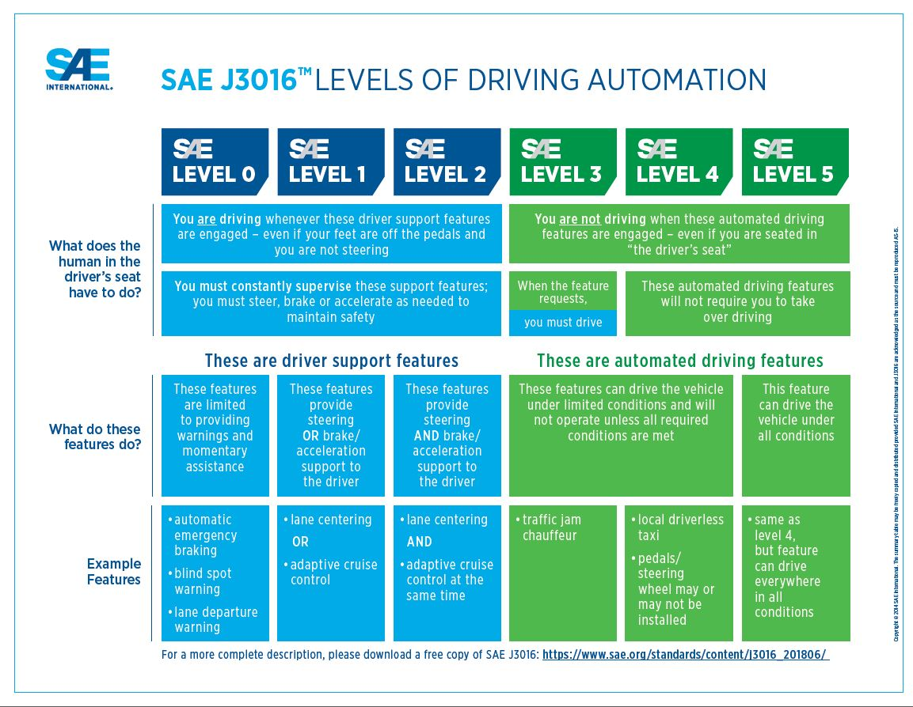

Call for Code <<
Previous Next >> Topic2
W8
主題一:
利用 Leo Editor 編輯 reveal.js 網際簡報.
在可攜系統的命令列視窗中輸入 leo, 即可開啟 Leo Editor. 若無法順利開啟 Leo Editor 而且進入視窗表單輸入迴圈, 則可在啟動的 home 目錄下建立一個 .leo 目錄, 且在目錄中建立一個純文字檔案 .leoID.txt 內容為任何字串 (可以使用 leo), 之後再重新啟動可攜系統後, 在命令視窗中輸入 leo 就可以啟動 Leo Editor.
Leo Editor 基本操作:
Ctrl + i : insert node (insert)
Ctrl + r : node 往右移動 (right)
Ctrl + l : node 往左移動 (left)
Ctrl + u: node 往上移動 (up)
Ctrl + d : node 往下移動 (down)
@edit 節點編輯指令
@clean 節點含下屬編輯指令
Leo Editor 遞迴導入外部程式碼節點程式:
c.recursiveImport(
dir_ = r'./',
# use @clean to parse the associated files
kind = '@clean',
# if save_at_file = True, @@ will use to protect the source codes
safe_at_file = False,
theTypes = ['.py']
)
recursiveImport 使用案例:
https://github.com/mdecourse/RobotSimulator 採用 Python 程式語言開發, 使用者可以在開發目錄中建立一個 Leo Editor 專案擋, 並將上述遞迴節點指令輸入後, 以 Ctrl + b 要求執行後, 便可將程式碼納入 Leo Editor 節點架構中.
CMSiMDE 網際內容管理系統中內含 reveal.js, 其 .leo 檔案位於 config/reveal.leo, 利用 Leo Editor 開啟後, 可以編輯各 slide 內容. slide 1 - slide 31 代表各種不同簡報內容, 各分組可以自行取捨編輯後在靜態網頁中的 Home -reveal 下拉式功能表中開啟.
WCMJ2021 reveal.js 簡報: https://mde.tw/wcmj2021/reveal/
主題二:
https://www.epfl.ch (瑞士洛桑聯邦理工學院)
Automated Driving 電子書
Honda level 3 news (Honda Legend)
distributed_intelligent_systems.pdf
Sensing, Action, and Control in Mobile Robotics.pdf
Localization Methods for Mobile Robots.pdf
Localization Methods and an Introduction to Collective Movements.pdf
Collective Movements in Multi-Robot Systems.pdf
Multi-Level Modeling Methods for Swarm Robotic Systems.pdf

開源套件:
Webots:
The Webots project started in 1996, initially developed by Dr. Olivier Michel at the Swiss Federal Institute of Technology (EPFL) in Lausanne, Switzerland and then from 1998 by Cyberbotics Ltd. 2018 年底 Webots 決定開源
https://github.com/cyberbotics/webots
https://github.com/mdecourse/webots_docs
https://cyberbotics.com/doc/guide/ure
Interview: http://lis2.epfl.ch/resources/podcast/2007/01/olivier-michel-robot-simulation-as.html
FEM:
https://github.com/Range-Software/range3
https://gitlab.com/akantu
https://www.epfl.ch/labs/lsms/wp-content/uploads/2018/10/akantu_ug_v2.3.pdf
Call for Code <<
Previous Next >> Topic2